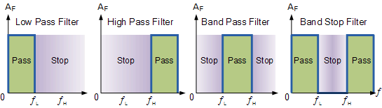
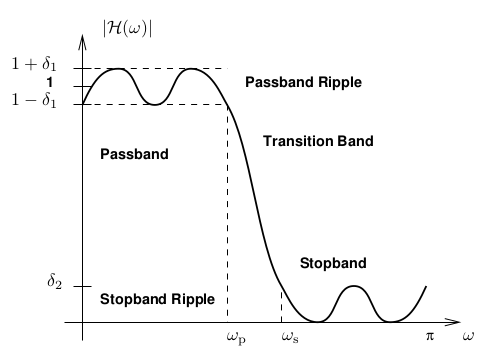

import holoviews as hv
hv.extension('bokeh')
hv.opts.defaults(hv.opts.Curve(width=500),
hv.opts.Image(width=500, colorbar=True, cmap='Viridis'))
import numpy as np
import scipy.signal
import scipy.fft
8. Diseño de sistemas y filtros FIR¶
En la lección anterior definimos un sistema FIR que transforma una obtiene una salida \(y\) a partir de una entrada \(x\) como
donde \(h\) es un vector de largo \(L+1\) que tiene los coeficientes del sistema y \(*\) es la operación de convolución
En esta lección veremos
La respuesta al impulso y respuesta en frecuencia de un sistema
La definición de filtro y los tipos básicos de filtros
Como diseñar un filtro FIR, es decir como decidir los valores del vector \(h\)
8.1. Respuesta al impulso de un sistema¶
Sea el impulso unitario o delta de Kronecker
La respuesta al impulso de un sistema discreto es la salida obtenida cuando la entrada es un impulso unitario
Para un sistema FIR arbitrario tenemos
es decir que la respuesta al impulso:
tiene una duración finita y luego decae a zero
recupera los coeficientes \(h[j]\) del sistema
En un sistema causal se tiene que \(h[n] = 0 \quad \forall n < 0\)
Llamamos soporte del sistema a todos aquellos valores de \(n\) tal que \(h[n] \neq 0\)
8.1.1. Ejemplo: Respuesta al impulso del sistema reverberante¶
Para el sistema reverberante
la respuesta al impulso es
La respuesta al impulse me permite a recuperar los coeficientes del sistema en caso de que no los conociera
8.2. Respuesta en frecuencia de un sistema¶
Sea un sistema lineal cuyos coeficientes no cambian en el tiempo, como el sistema FIR que hemos estado estudiando
Por propiedad de la transformada de Fourier sabemos que
donde llamamos a \(H[k]\) la respuesta en frecuencia del sistema
La respuesta en frecuencia es la transformada de Fourier de la respuesta al impulso
8.2.1. Respuesta en frecuencia utilizando Python¶
Podemos calcular la respuesta en frecuencia de un filtro a partir de su respuesta al impulso \(h\) usando la función
scipy.signal.freqz(b, # Coeficientes en el numerador h
a=1, # Coeficientes en el denominador de h
fs=6.28318 # Frecuencia de muestreo
...
)
Para el caso de un filtro FIR solo existen coeficientes en el numerador por lo que no utilizamos el argumento \(a\)
La función retorna
freq, H = scipy.signal.freqz(b=h)
un arreglo de frecuencias y la respuesta en frecuencia (compleja)
8.2.2. Ejemplo: Respuesta en frecuencia del sistema promediador¶
El sistema promediador que vimos la lección anterior tiene respuesta al impulso
El valor absoluto de su respuesta en frecuencia es
p1, p2 = [], []
for L in [10, 20, 50]:
h = np.zeros(shape=(100,))
h[:L] = 1/L
freq, H = scipy.signal.freqz(b=h, fs=1)
p1.append(h)
p2.append(np.abs(H))
ph = hv.Overlay([hv.Curve((range(100), p), 'Tiempo', 'Respuesta al impulso') for p in p1])
pH = hv.Overlay([hv.Curve((freq, p), 'Frecuencia', 'Respuesta en frecuencia') for p in p2])
hv.Layout([ph, pH]).cols(1).opts(hv.opts.Curve(height=200))
Nota
Mientras más ancho es el sistema en el dominio del tiempo (\(L\) grande), más concentrada se vuelve su respuesta en frecuencia
Si multiplicamos \(H\) con el espectro de una señal, lo que estamos haciendo es atenuar las frecuencias altas
Formalizaremos este concepto a continuación
8.3. Filtros digitales¶
Un filtro es un sistema cuyo objetivo es reducir o resaltar un aspecto específico de una señal
Por ejemplo
Disminuir el nivel de ruido
Separar dos o más señales que están mezcladas
Ecualizar la señal
Restaurar la señal (eliminar desenfoque o artefactos de grabación)
Llamamos filtro digital a los filtros aplicados a señales digitales y hablamos de señal filtrada para referirnos a la salida del filtro
En esta unidad nos enfocaremos en filtros cuyos coeficientes son fijos y no se modifican en el tiempo. En la próxima unidad veremos filtros que se adaptan continuamente a los cambios de la entrada
8.3.1. Tipos básicos de filtro¶
Como vimos el filtro lineal e invariante en el tiempo puede estudiarse en frecuencia usando
donde \(H[k]\) es la DFT del filtro (respuesta en frecuencia)
El filtro actua como una máscara multiplicativa que modifica el espectro de la señal entrada
Importante
Esto significa que el filtro sólo puede acentuar, atenuar o remover ciertas frecuencias pero nunca crear nuevas frecuencias
Consideremos los siguienes filtros o máscaras ideales
De izquierda a derecha tenemos:
Filtro pasa bajo: Anula las frecuencias altas. Sirve para suavizar
Filtro pasa alto: Anula las frecuencias bajas. Sirve para detectar cambios
Filtro pasa banda: Anula todo excepto una banda continua de frecuencias
Filtro rechaza banda: Anula sólo una banda continua de frecuencias
Las llamamos “ideales” por que en general los cortes de los filtros no pueden ser tan abruptos como se muestra en la figura
A continuación veremos un método para diseñar filtros FIR partiendo desde el dominio de la frecuencia
8.4. Diseño de un filtro FIR: Método de la ventana¶
Diseñar un filtro consisten en definir
L: El largo de la respuesta al impulso
h: Los valores de la respuesta al impulso
El siguiente algoritmo de diseño de filtro se llama el “método de la ventana” y parte de la base de una respuesta en frecuencia ideal
Especificar una respuesta en frecuencia ideal \(H_d[k]\) dependiendo de los requerimientos
Usar la transformada de Fourier inversa para obtener la respuesta al impulso ideal \(h_d[n]\)
Truncar la respuesta al impulso ideal usando una ventana tal que \(h[n] = h_d[n] w[n]\)
Finalmente \(h[n]\) nos da los coeficientes del filtro FIR y \(w[n]\) nos da el largo del filtro
La ventana \(w[n]\) puede ser cualquiera de las funciones vistas en la unidad anterior, por ejemplo una ventana rectangular
o la ventana de Hann
A continuación veremos paso a paso como se crea un filtro pasa-bajo utilizando este método. Más adelante veremos unas funciones de scipy que facilitan este proceso
8.4.1. Diseño de un filtro pasa bajo (LPF)¶
Un filtro pasa bajo es aquel que sólo deja pasar las bajas frecuencias
Sus usos son:
Recuperar una tendencia o comportamiento lento en la señal
Suavizar la señal y disminuir la influencia del ruido aditivo
Diseñemos un filtro que elimine todas las frecuencias mayores a \(f_c\) [Hz] de una señal \(x[n]\) muestreada con frecuencia \(F_s\)
Paso 1: Respuesta en frecuencia ideal
Propongamos la siguiente respuesta en frecuencia que solo deja pasar las frecuencias menores a \(f_c\), es decir que sólo es distinta de cero en el rango \([-f_c, f_c]\)
fc = 0.1 # Frecuencia de corte
Fs = 1 # Frecuencia de muestreo
n = np.arange(-50, 50, step=1/Fs);
f = scipy.fft.fftshift(scipy.fft.fftfreq(n=len(n), d=1/Fs))
# Diseño de la respuesta en frecuencia ideal
kc = int(len(n)*fc)
Hd = np.zeros_like(n, dtype=np.float64);
Hd[:kc] = 1.
Hd[len(Hd)-kc+1:] = 1.
Paso 2: Respuesta al impulso ideal
Obtenemos la transformada de Fourier inversa de la respuesta en frecuencia
donde la versión en tiempo discreto sería
Notemos que es una función infinitamente larga
# Cálculo de la respuesta al impulso ideal
#hd = np.real(sfft.ifftshift(sfft.ifft(Hd)))
hd = 2*fc*np.sinc(2*fc*n/Fs)/Fs # Se omite Pi por que está incluido en np.sinc
p1 = hv.Curve((f, scipy.fft.fftshift(Hd)), 'Frecuencia', 'Respuesta en\n frecuencia ideal')
p2 = hv.Curve((n, hd), 'Tiempo', 'Respuesta al\n impulso ideal')
hv.Layout([p1, p2]).opts(hv.opts.Curve(width=300, height=200))
Paso 3: Truncar la respuesta al impulso ideal
Para obtener una respuesta al impulso finita multiplicamos por una ventana finita de largo \(L+1\)
# Cálculo de la respuesta al impulso truncada
def truncar(hd, L=100):
w = np.zeros_like(hd);
w[len(w)//2-L//2:len(w)//2+L//2+1] = 1.
return w*hd
# Cálculo de la respuesta en frecuencia truncada
h = truncar(hd)
H = scipy.fft.fft(h)
Comparemos la respuesta en frecuencia ideal con la que en realidad aplicamos a la señal
p = []
p.append(hv.Curve((f, scipy.fft.fftshift(Hd)), 'Frecuencia', 'Respuesta en frecuencia', label='Ideal'))
for L in [20, 40]:
H = scipy.fft.fft(truncar(hd, L))
p.append(hv.Curve((f, scipy.fft.fftshift(np.abs(H))), label=f'Truncada L={L}'))
hv.Overlay(p).opts(hv.opts.Curve(line_width=3, alpha=0.75))
La respuesta en frecuencia “ideal” \(H_d[k]\) es plana y tiene discontinuidades fuertes
La respuesta en frecuencia “truncada” \(H[k]\) busca aproximar a \(H_d[k]\). Pero observando \(H[k]\) notamos que
Aparecen ondulaciones (ripple). No tiene zonas de paso y/o rechazo perfectamente planas
La frecuencia de corte es una transición. La discontinuidad no es abrupta como el caso ideal
El siguiente esquema muestra estos comportamientos
{kind=link}
La función de ventana que se ocupa para truncar la respuesta ideal influye en el trade-off entre cuan abrupta es la caida del filtro y las ondulaciones (ripple) que aparece en las zonas planas.
En general
más larga es la ventana (\(L\)) más fiel será la respuesta en frecuencia
mientras más suave es la ventana más lenta será la transición en la respuesta en frecuencia y habrán menos ondulaciones en las bandas de paso y rechazo
8.5. Diseño de filtro FIR usando scipy¶
Podemos diseñar un filtro usando la técnica de enventando con la función de scipy
scipy.signal.firwin(numtaps, # Largo del filtro
cutoff, # Frecuencia(s) de corte
window='hamming', # Función de ventana
pass_zero=True, # Se explicará a continuación
fs=None # Frecuencia de muestreo
...
)
El argumento pass_zero es un booleano que indica si la frecuencia cero pasa o se rechaza por el filtro. Se darán más detalles en los ejemplos que se muestran a continuación.
La función firwin retorna un arreglo con \(h\) que corresponde a la respuesta al impulso del filtro FIR. Luego podemos usar el arreglo \(h\) para convolucionar con nuestra señal de entrada.
8.5.1. Diseño de un filtro pasa bajo (LPF)¶
Veamos como se ocupa esta función para diseñar el filtro pasa-bajo que creamos manualmente en la sección anterior
fc = 0.1 # Frecuencia de corte
Fs = 1 # Frecuencia de muestreo
L = 100+1 # Largo del filtro
h = scipy.signal.firwin(L, fc, window='boxcar', pass_zero=True, fs=Fs)
freq, H = scipy.signal.freqz(h, fs=Fs)
El argumento pass_zero debe ser True para diseñar un filtro pasa-bajo
p1 = hv.Curve((range(len(h)), h), 'Tiempo', 'Respuesta al\n impulso')
p2 = hv.Curve((freq, np.absolute(H)), 'Frecuencia', 'Respuesta en\n frecuencia')
hv.Layout([p1, p2 * hv.VLine(fc).opts(color='r', alpha=0.25)]).opts(hv.opts.Curve(width=300, height=200))
El resultado es equivalente al proceso manual que mostramos antes
Podemos cambiar el compromiso (trade-off) entre la velocidad de la transición y las ondulaciones si utilizamos otra ventana. Por ejemplo para la ventana de Hamming tenemos
fc = 0.1 # Frecuencia de corte
Fs = 1 # Frecuencia de muestreo
L = 100+1 # Largo del filtro
h = scipy.signal.firwin(L, fc, window='hamming', pass_zero=True, fs=Fs)
freq, H = scipy.signal.freqz(h, fs=Fs)
p1 = hv.Curve((range(len(h)), h), 'Tiempo', 'Respuesta al\n impulso')
p2 = hv.Curve((freq, np.absolute(H)), 'Frecuencia', 'Respuesta en\n frecuencia')
hv.Layout([p1, p2 * hv.VLine(fc).opts(color='r', alpha=0.25)]).opts(hv.opts.Curve(width=300, height=200))
Nota
Las ondulaciones disminuye pero el corte en frecuencia es ahora más lento
8.5.2. Diseño de un filtro pasa alto (HPF)¶
Un filtro pasa alto es aquel que sólo deja pasar las altas frecuencias
Sus usos son:
Identificar cambios/detalles, es decir comportamientos rápidos en una señal
Eliminar tendencias
Con respecto al ejemplo anterior, para diseñar un filtro pasa alto con firwin sólo debemos cambiar el valor del argumento pass_zero
Fs = 1 # Frecuencia de muestreo
fc = 0.2 # Frecuencia de corte
L = 100+1 # Largo del filtro
h = scipy.signal.firwin(L, fc, window='hamming', pass_zero=False, fs=Fs)
freq, H = scipy.signal.freqz(h, fs=Fs)
p1 = hv.Curve((range(L), h), 'Tiempo', 'Respuesta al\n impulso')
p2 = hv.Curve((freq, np.absolute(H)), 'Frecuencia', 'Respuesta en\n frecuencia')
hv.Layout([p1, p2]).opts(hv.opts.Curve(width=300, height=200))
Nota
La respuesta en frecuecia muestra que este filtro anula las frecuencias bajas de la señal
8.5.3. Diseño de un filtro pasa banda (BPF) y rechaza banda (BRF)¶
Como sus nombres lo indican estos filtros
BPF: Dejan pasar sólo una cierta banda de frecuencia
BRF: Dejan pasar todas las frecuencias excepto una banda determinada
La banda de frecuencia está definida por sus frecuencias de corte mínima y máxima \(f_{c1} < f_{c2}\)
Para crear un filtro BPF o BRF con firwin debemos entregar una tupla o lista con estas frecuencias. Por ejemplo para un filtro BPF
Fs = 1 # Frecuencia de muestreo
fc1, fc2 = 0.2, 0.3 # Frecuencias de cortes
L = 100+1 # Largo del filtro
h = scipy.signal.firwin(L, (fc1, fc2), window='hamming', pass_zero=False, fs=Fs)
freq, H = scipy.signal.freqz(h, fs=Fs)
p1 = hv.Curve((range(L), h), 'Tiempo', 'Respuesta al\n impulso')
p2 = hv.Curve((freq, np.absolute(H)), 'Frecuencia', 'Respuesta en\n frecuencia')
hv.Layout([p1, p2]).opts(hv.opts.Curve(width=300, height=200))
Nota
La respuesta en frecuecia muestra que este filtro anula las frecuencias fuera del rango definido
Un filtro rechaza-banda se crea con el argumento pass_zero=True
h = scipy.signal.firwin(L, (fc1, fc2), window='hamming', pass_zero=True, fs=Fs)
freq, H = scipy.signal.freqz(h, fs=Fs)
p1 = hv.Curve((range(L), h), 'Tiempo', 'Respuesta al\n impulso')
p2 = hv.Curve((freq, np.absolute(H)), 'Frecuencia', 'Respuesta en\n frecuencia')
hv.Layout([p1, p2]).opts(hv.opts.Curve(width=300, height=200))
Nota
La respuesta en frecuecia muestra que este filtro anula las frecuencias dentro del rango definido
8.6. Ejemplo: Filtro FIR para remover una tendencia¶
En la lección anterior vimos el caso de una señal de interés que está montada en una tendencia
np.random.seed(0);
n = np.arange(0, 150, step=1)
C = np.exp(-0.5*(n[:, np.newaxis] - n[:, np.newaxis].T)**2/30**2)
x_tendencia = 3*np.random.multivariate_normal(np.zeros_like(n), C)+2.5
x_deseada = np.sin(2.0*np.pi*0.125*n)
x = x_deseada + x_tendencia
p3=hv.Curve((n, x_deseada), 'Tiempo', 'Señal', label='Deseada (s)').opts(color='k', alpha=0.75)
p2=hv.Curve((n, x_tendencia), 'Tiempo', 'Señal', label='Tendencia').opts(alpha=0.75)
p1=hv.Curve((n, x), 'Tiempo', 'Señal', label='Observada (x)').opts(height=250)
hv.Overlay([p1,p2,p3]).opts(legend_position='bottom_right')
Podemos diseñar un filtro FIR para separar la señal deseada de la tendencia
Para eso necesitamos definir una frecuencia de corte. Podemos encontrar una frecuencia de corte apropiada en base al espectro de amplitud de la señal observada
freq = scipy.fft.rfftfreq(n=len(x), d=1)
SA = np.absolute(scipy.fft.rfft(x-np.mean(x)))
hv.Curve((freq, SA), 'Frecuencia [Hz]', 'Espectro').opts(height=250)
El espectro nos indica que existe un componente con frecuencia cercana a 0.13 Hz y otro más lento con frecuencia cercana a 0.01 Hz
Si queremos el componente más rápido podemos diseñar un filtro pasa-alto con una frecuencia de corte entre estos dos valores
Veamos como cambia la señal filtrada y su espectro de amplitud ante distintas frecuencias de corte en torno al rango anteriormente mencionado. Se visualiza también la respuesta en frecuencia del filtro diseñado (en rojo) sobre el espectro resultante
L = 51
y, Y, H = {}, {}, {}
for fc in np.arange(0.01, 0.17, step=0.01):
# Diseñar filtro
h = scipy.signal.firwin(L, fc, window='hamming', pass_zero=False, fs=1)
# Filtrar señal
y[fc] = scipy.signal.convolve(x, h, mode='same', method='auto')
# Obtener espectro de la señal filtrada
Y[fc] = np.absolute(scipy.fft.rfft(y[fc]-np.mean(y[fc]), norm='forward'))
# Obtener respuesta en frecuencia del filtro
freqH, H[fc] = scipy.signal.freqz(h, fs=1)
H[fc] = np.abs(H[fc])
freq = scipy.fft.rfftfreq(n=len(x), d=1)
hMap1 = hv.HoloMap(kdims='Frecuencia de corte')
hMap2 = hv.HoloMap(kdims='Frecuencia de corte')
for fc, y_ in y.items():
hMap1[fc] = hv.Curve((n, y_), 'Tiempo [s]', 'Salida', label='y')
for (fc, Y_),(fc, H_) in zip(Y.items(), H.items()):
p1 = hv.Curve((freq, Y_), 'Frecuencia [Hz]', 'Espectro', label='Y')
p2 = hv.Curve((freqH, H_), 'Frecuencia [Hz]', 'Espectro', label='H')
hMap2[fc] = p1 * p2
p_target = hv.Curve((n, x_deseada), 'Tiempo', 'Salida', label='s').opts(color='k', alpha=0.5, width=4)
hv.Layout([hMap1 * p_target, hMap2]).cols(1).opts(hv.opts.Curve(height=250),
hv.opts.Overlay(legend_position='bottom_right'))
8.7. Resumen¶
El diseño del filtro está dado entonces por su
Aplicación: Definida por la respuesta en frecuencia ideal , por ejemplo: Pasa-bajo, Pasa-alto, etc
Fidelidad: El error tolerable entre la respuesta en frecuencia ideal y la real
El tipo de filtro y sus frecuencias de corte definen su Aplicación. Esto es un requisito del problema que buscamos resolver.
El parámetro \(L\) nos da un trade-off para la fidelidad. Si agrandamos \(L\) tendremos mayor fidelidad pero más costo computacional.
El tipo de función de ventana que se ocupa para truncar también afecta la fidelidad entregando un segundo trade-off entre artefactos (ondulaciones) en las zonas de paso/rechazo y que tan abrupto es el corte en frecuencia